Photographs
76 frames from trails, waterfalls, forts and rooftops. All taken by me.
Peaks & meadows
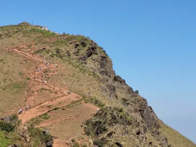
Red trail up the ridge 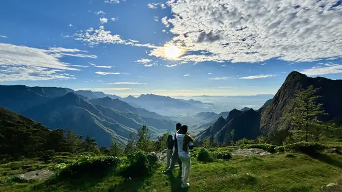
Two people, one valley 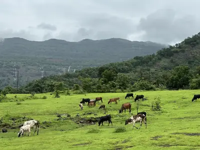
Cattle on the plateau 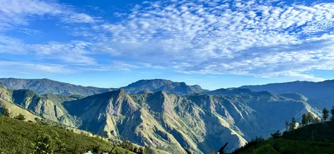
Ranges under a mackerel sky 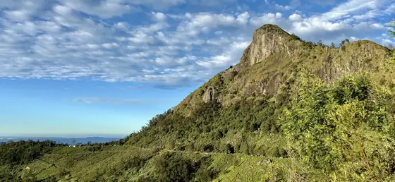
Rocky summit, blue sky 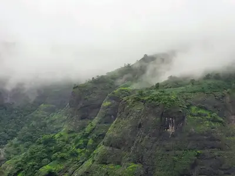
Cliffs in the monsoon 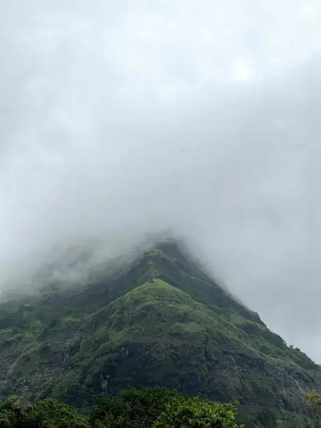
Peak inside the cloud 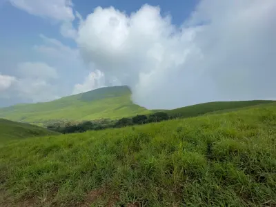
Meadow and cloud 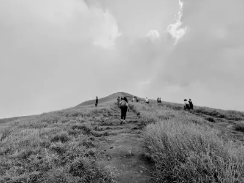
Hikers in black and white 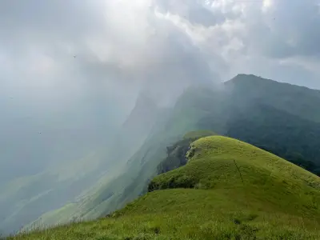
Misty green ridge 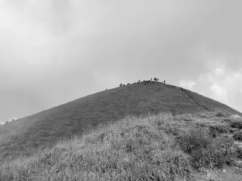
Summit in monochrome 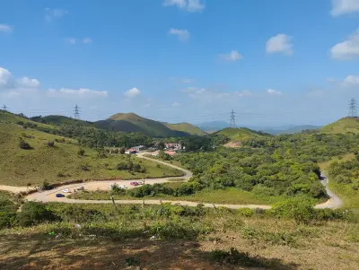
Winding road 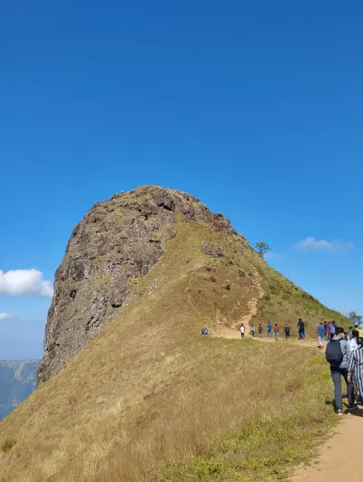
Rocky peak trail 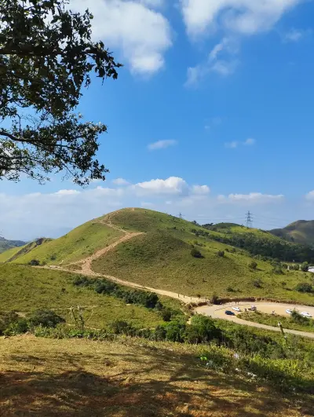
Rolling grassland 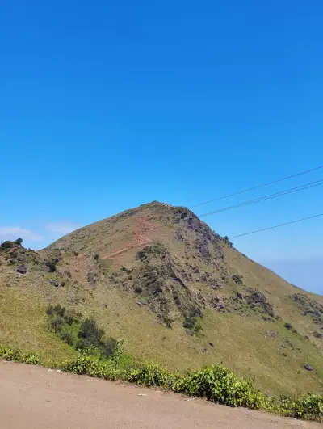
Red hill from the road 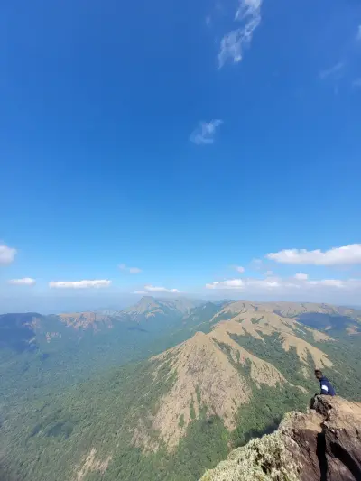
Mountain ridge 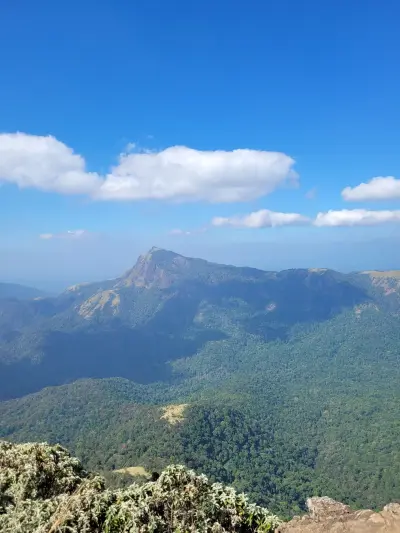
Layered mountains 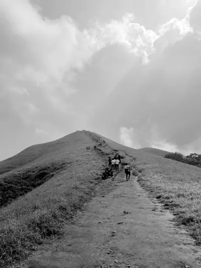
Trail in monochrome 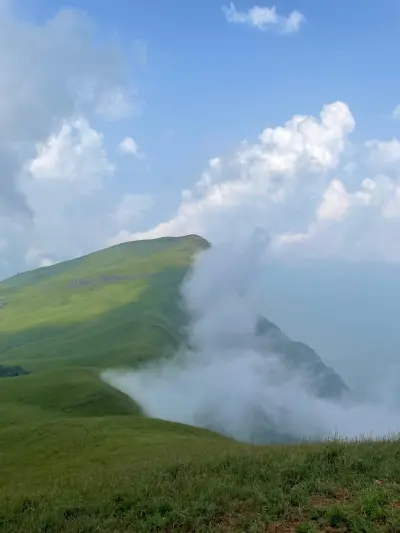
Cloud on the slope 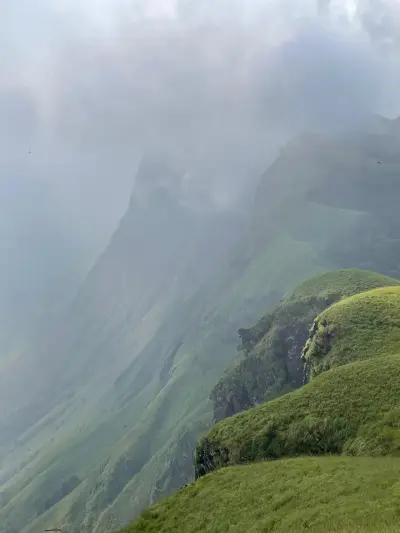
Misty mountains 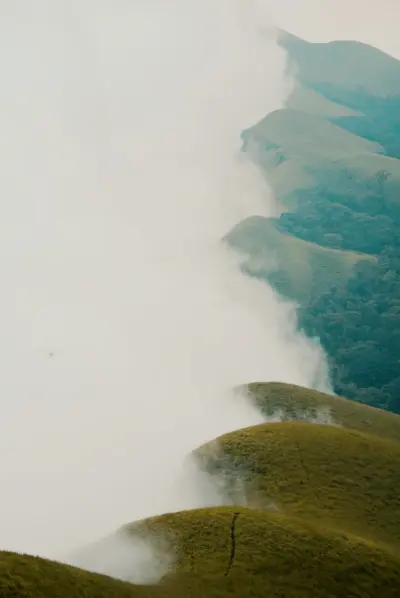
Cloud over the hills
Waterfalls & forests
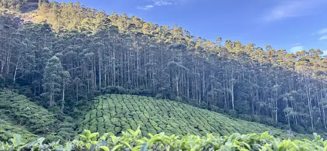
Forest above the tea 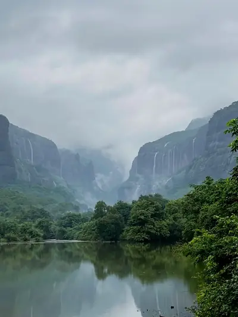
Waterfalls into the gorge 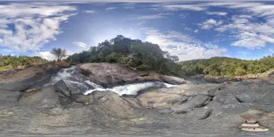
Rocky river panorama 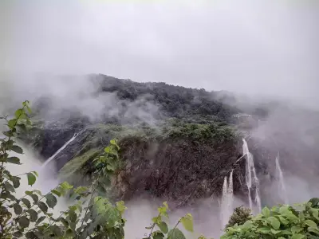
Waterfalls in the mist 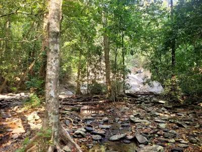
Forest stream 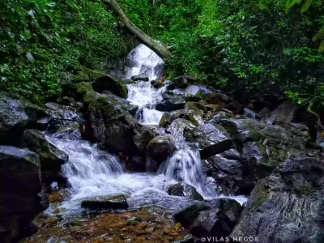
Forest cascade 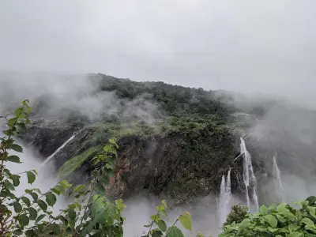
Mist and falls 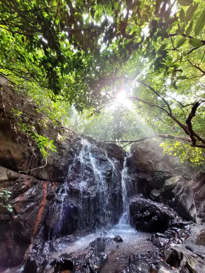
Sunbeams on a cascade 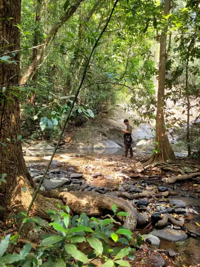
Forest walk 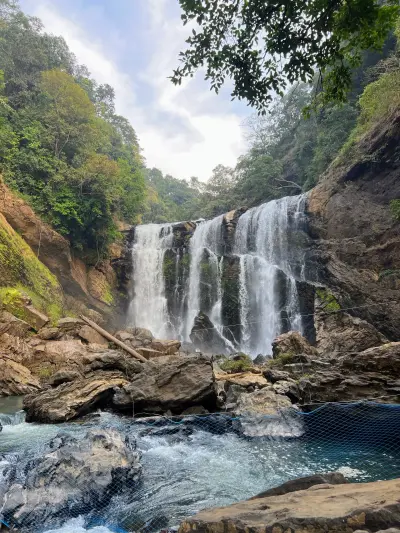
Waterfall and river 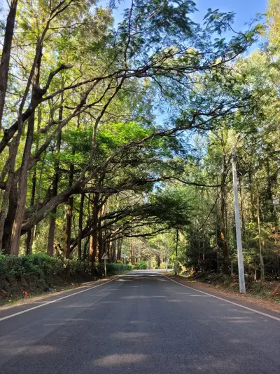
Tree tunnel road
Forts, temples & rocks
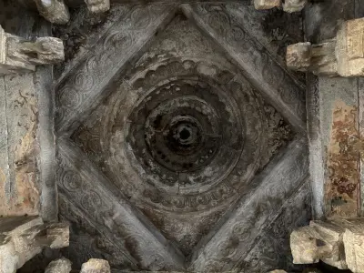
Carved ceiling 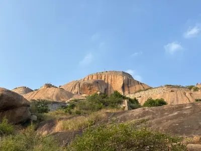
Golden rocks 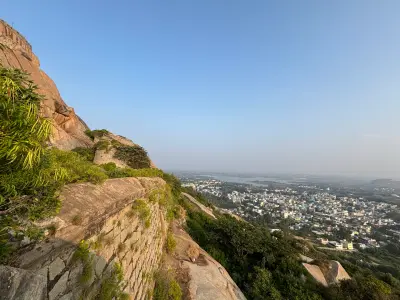
Ridge above the city 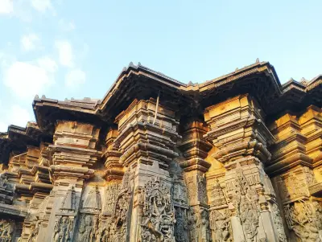
Temple carvings 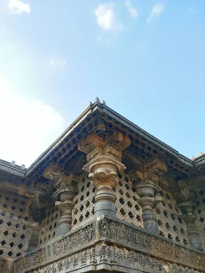
Carved eaves 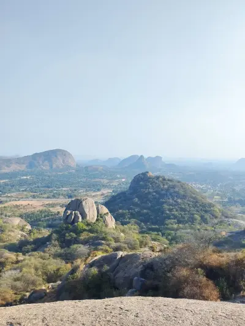
Boulder country Temple doorway 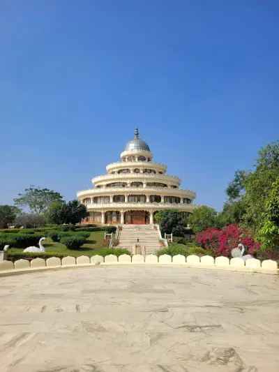
Domed hall 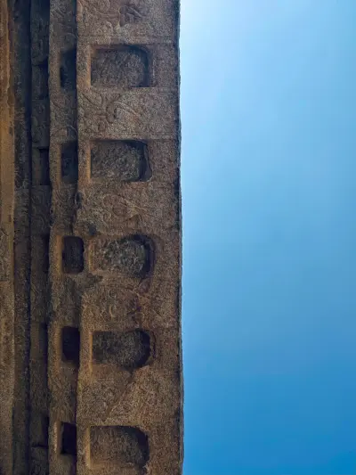
Stone and sky 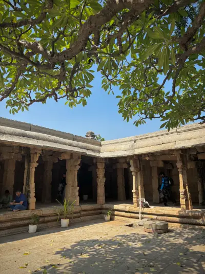
Courtyard through branches 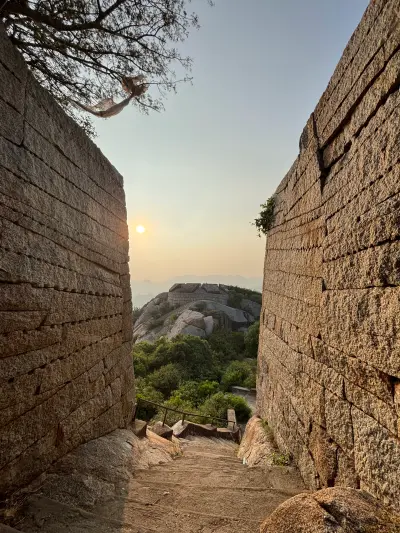
Fort wall at sunset 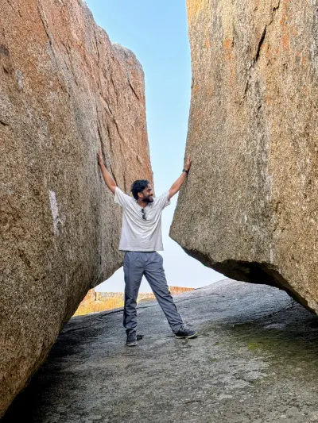
Between the boulders 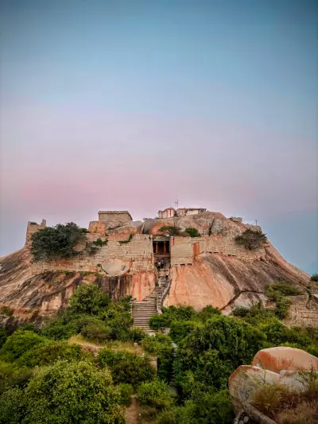
Hill fort at twilight
Sunsets, stars & trees
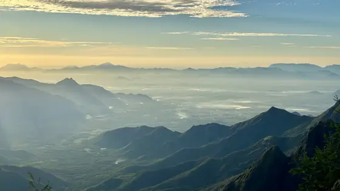
Morning haze in the valley 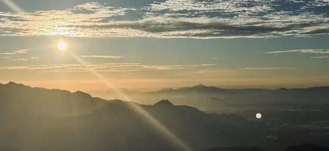
Sun rays over the ridge 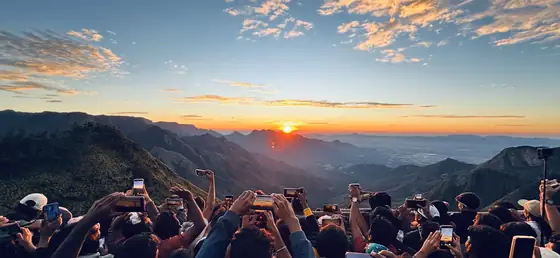
Everyone filming the sunrise 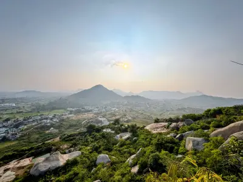
Sunrise over the hills 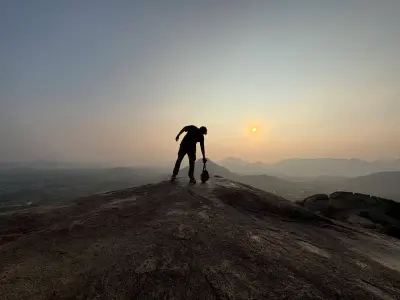
Silhouette at sunset 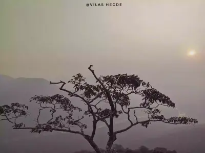
Tree in the mist Tea estate sunrise Tea garden path Old tree in the sun Canopy from below ~2.webp)
Sunset over the rocks Dusk haze Stars through the palms Looking up a tree Hand in hand at sunset
Cities, cafes & lakes
Tea estates and hill town Cafe courtyard Rooftops under a stormy sky Mall from above Lake jetty at dusk Pond pavilion Corner of the sky Street at sunset Pizza oven Flowers before the peak
Close-ups & companions
Green leaves Eye Cat portrait Hand in the leaves White cat Lizard on a tree